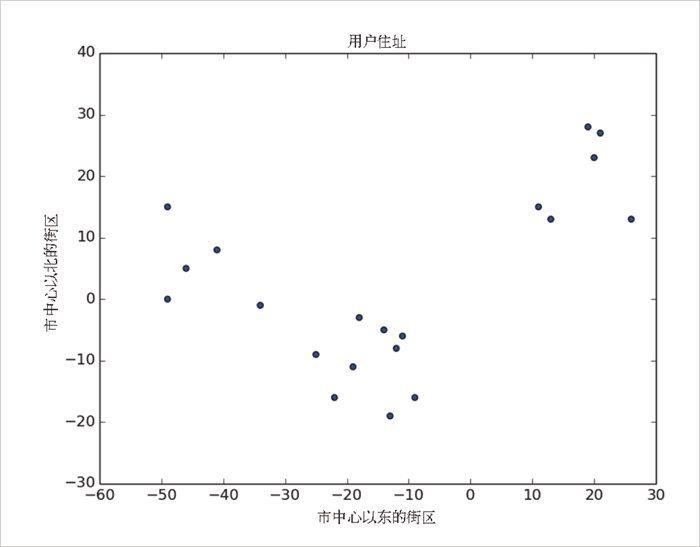
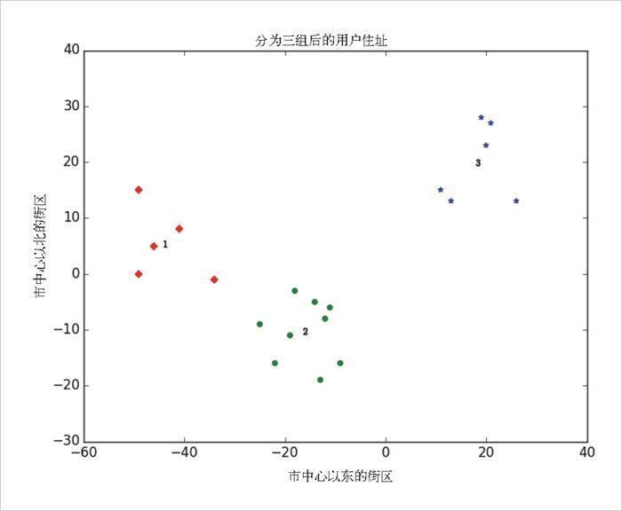
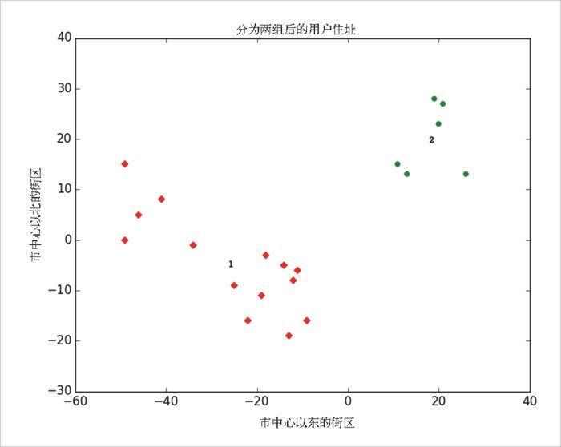

19.3 示例：聚会
为了庆祝 DataSciencester 的发展壮大，用户回馈部门的副总决定针对你家乡的用户组织几场私人聚会，并赞助啤酒、披萨和 DataSciencester T 恤。由于你了解所有当地用户的住址（如图 19-1），所以他想让你来选择聚会的地点，以方便大家的参与。

图 19-1：你家乡所在地的用户住址
根据具体的观察方式，你可能会发现有两个或三个用户群。（这很容易看出来，因为这里的数据只有两个维度。但是随着维度的增加，对眼神的挑战就会越来越大。）
首先，我们假设他提供的预算足以组织三次聚会。然后你来到计算机前面输入下列代码：
random.seed(0) # 因此你得到的结果与我的一样
clusterer = KMeans(3)
clusterer.train(inputs)
print clusterer.means
你发现用户主要居住在以 [-44.5]、[-16，-10] 和 [18，20] 为中心的三个区域中，因此，你打算在这三个位置附近寻找聚会场地（见图 19-2）。

图 19-2：分为三组后的用户住址
你将这些汇报给了副总，但是他却告诉你目前的预算仅够组织两次聚会了。
“没问题，”你说：
random.seed(0)
clusterer = KMeans(2)
clusterer.train(inputs)
print clusterer.means
如图 19-3 所示，某次聚会地点仍然定在 [18，20] 位置附近，而另一次聚会的地点则定在 [-26，-5] 位置附近。

图 19-3：分为两组后的用户住址